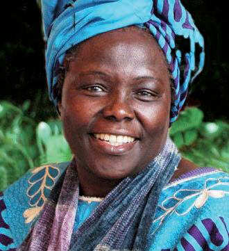

Foto: Martin Rowe
La bióloga keniana Wangari Maathai quiso combatir la pobreza que la deforestación generaba en su país.
Para hacerlo comenzó a plantar árboles e invitó a otros a imitar la iniciativa.
Así, con su proyecto Cinturón Verde, promovió la siembra de más de 47 millones de árboles en África.
En 2004 recibió el premio Nobel de la Paz por su defensa del desarrollo sostenible y del medio ambiente.